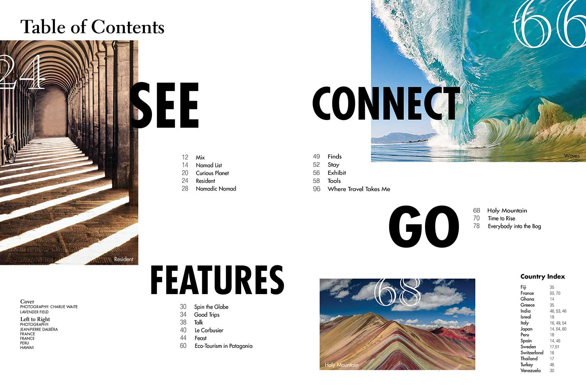
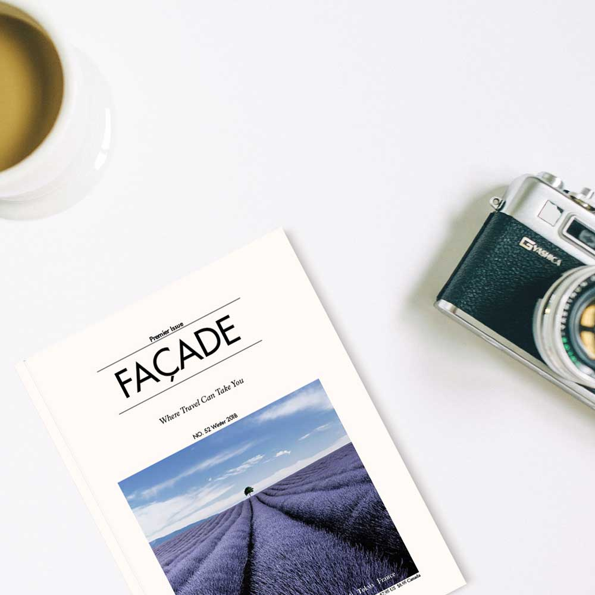

Magazine Designs
Custom Design for a Travel and Art Magazine
Through the process of designing a publication, I learned that choosing appropriate typefaces, imagery, and creating dynamic compositions is crucial.

Main & Table of Contents
In the special feature section, I selected the theme that I was interested in, and I engaged that well. However, I spent a lot of time to organize various contents nicely in the table of contents section based on various magazines.

About
This project was created as part of a school project. The course was ART 120 Intro to Typography and the assignment was to create custom Magazine of Art and Travel.